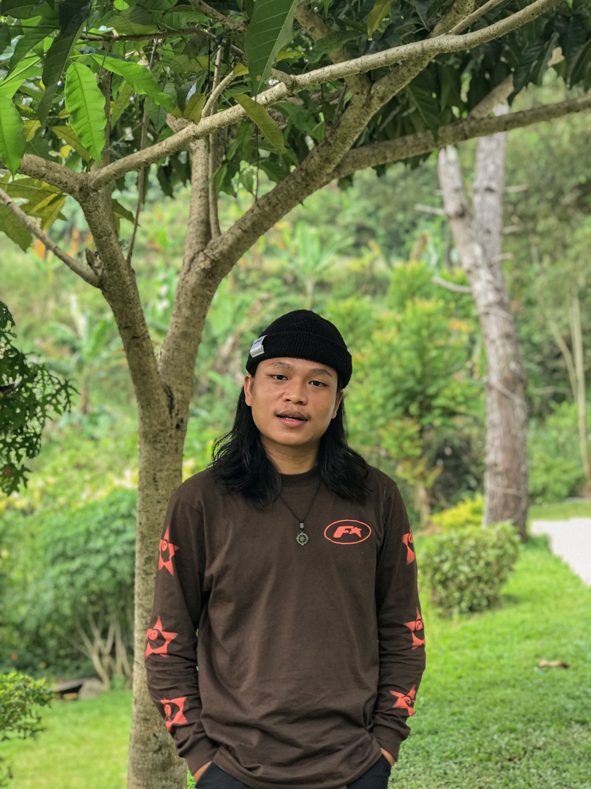
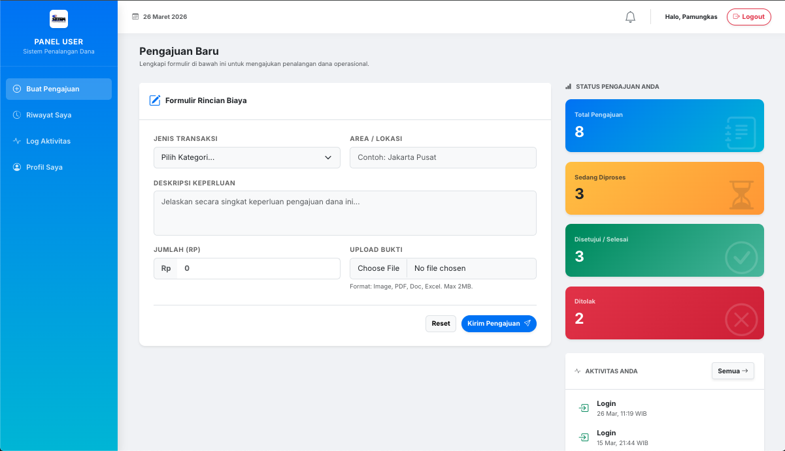
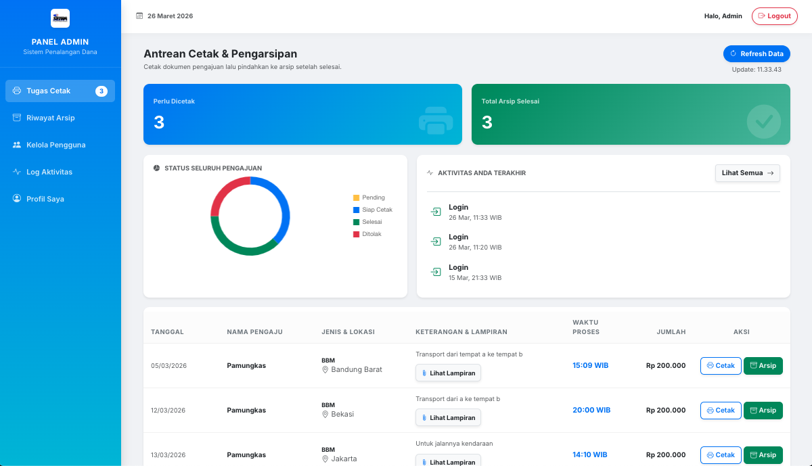
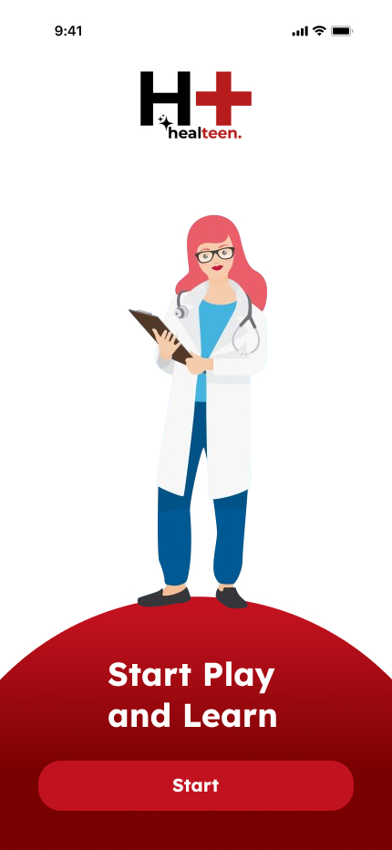

Saya berfokus pada pembangunan website yang fungsional, mulai dari desain antarmuka hingga sistem database di balik layarnya. Berikut adalah proyek yang pernah saya kerjakan.
Download CV
Membangun antarmuka website yang responsif dan ramah pengguna (user-friendly). Fokus pada tata letak yang bersih agar informasi dan fitur dapat diakses dengan mudah dari berbagai ukuran perangkat.
Kunjungi Website

Proyek mata kuliah ini berfokus pada perancangan antarmuka pengguna (UI) dan pengalaman pengguna (UX) menggunakan Figma. Desain aplikasi mobile "Healteen" ini dibuat untuk mempermudah [Tujuan Utama Aplikasi Anda, misal: penjadwalan konsultasi dokter]. Saya fokus pada [Tantangan Utama, misal: menyederhanakan alur pemesanan] dan aksesibilitas untuk semua kalangan usia.
Lihat Desain di FigmaSaya selalu terbuka untuk diskusi dan peluang kerja sama yang baru. Mari terhubung!